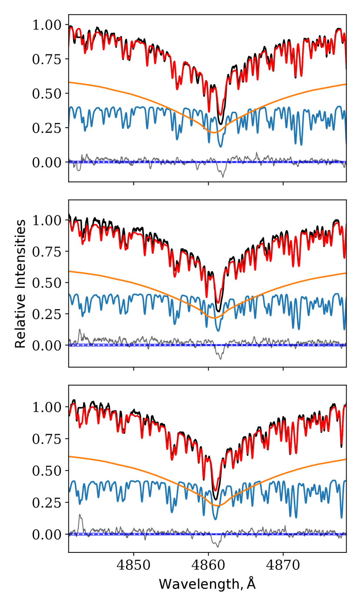
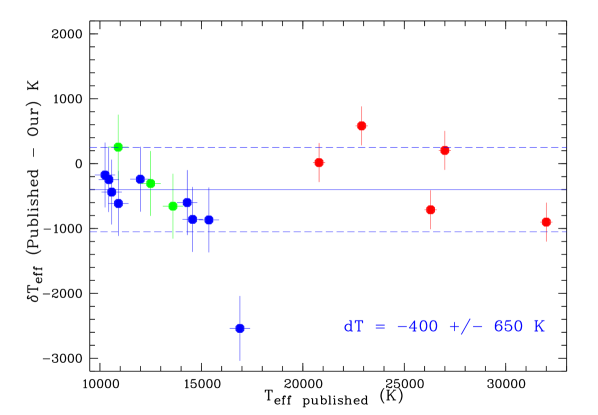
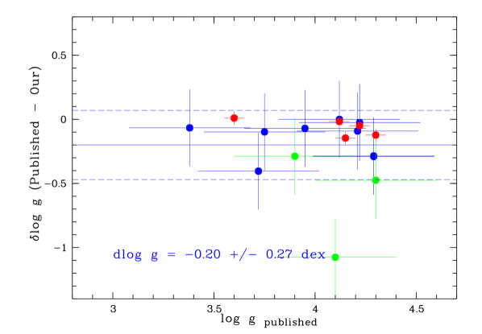
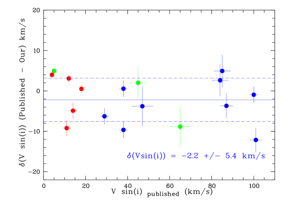
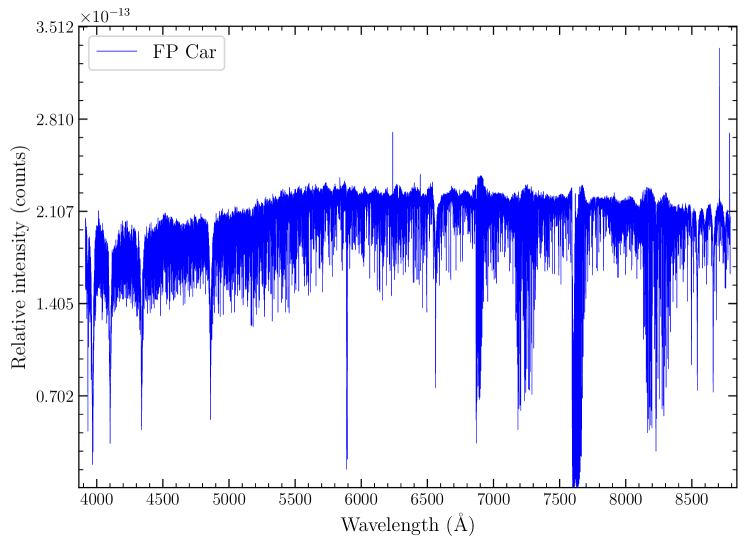
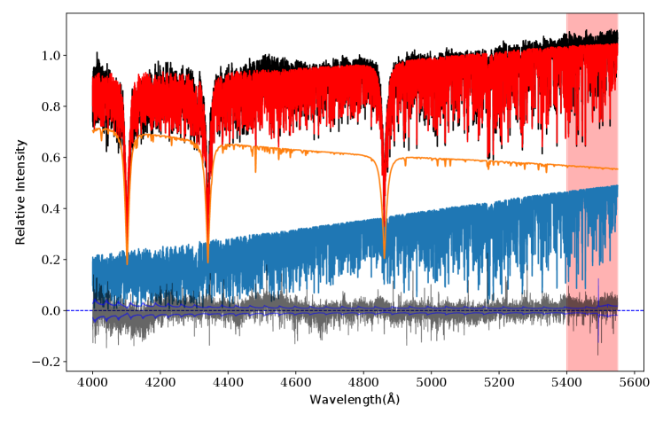
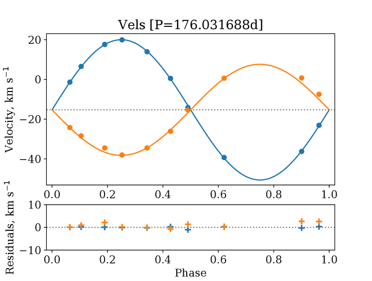
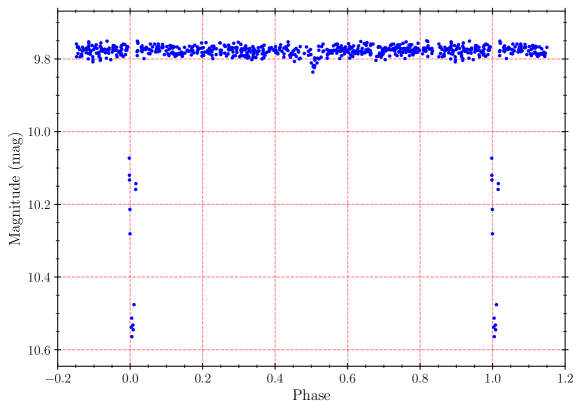

المجلد0 (20xx) العدد0، 000–000
22institutetext: Southern African Large Telescope, P.O. Box 9, Observatory, Cape Town, 7935 South Africa
33institutetext: Sternberg Astronomical Institute, Lomonosov Moscow State University, Moscow, 119992 Russia
44institutetext: Institute of Astronomy of RAS, Moscow, Russia
55institutetext: New York University Abu Dhabi, PO Box 129188, Abu Dhabi, UAE
66institutetext: Center for Astro, Particle, and Planetary Physics, NYU Abu Dhabi, PO Box 129188, Abu Dhabi, UAE
\vs\noReceived 20xx month day; accepted 20xx month day
الثنائيات الكسوفية طويلة الدور: نحو العلاقة الحقيقية بين الكتلة واللمعان. I. عينة الاختبار، والأرصاد، وتحليل البيانات.
الملخص
إن علاقة الكتلة-اللمعان قانون أساسي في الفيزياء الفلكية.
وقد اقترحنا أن علاقة الكتلة-اللمعان المستخدمة حالياً
ليست صحيحة في مجال الكتلة  ،
لأنها أُنشئت باستخدام ثنائيات كسوفية مزدوجة الخطوط، حيث تكون
المكونات متزامنة ومن ثم يغيّر كل منها المسار التطوري للآخر. ولاستبعاد هذا الأثر، بدأنا مشروعاً لدراسة
ثنائيات كسوفية ضخمة طويلة الدور من أجل إنشاء منحنيات للسرعة الشعاعية
وتحديد كتل المكونات.
نعرض الخطوط العامة لمشروعنا ونقدم عينة الاختبار المختارة
إلى جانب أول أرصاد طيفية باستخدام HRS/SALT
وحزمة البرمجيات
fbs (Fitting Binary Stars)، التي طورناها لتحليل بياناتنا الطيفية.
ونقدم، بوصفه أول نتيجة، منحنيات السرعة الشعاعية والعناصر المدارية ذات أفضل ملاءمة
لمكوّني النظام الثنائي FP Car من عينة الاختبار لدينا.
،
لأنها أُنشئت باستخدام ثنائيات كسوفية مزدوجة الخطوط، حيث تكون
المكونات متزامنة ومن ثم يغيّر كل منها المسار التطوري للآخر. ولاستبعاد هذا الأثر، بدأنا مشروعاً لدراسة
ثنائيات كسوفية ضخمة طويلة الدور من أجل إنشاء منحنيات للسرعة الشعاعية
وتحديد كتل المكونات.
نعرض الخطوط العامة لمشروعنا ونقدم عينة الاختبار المختارة
إلى جانب أول أرصاد طيفية باستخدام HRS/SALT
وحزمة البرمجيات
fbs (Fitting Binary Stars)، التي طورناها لتحليل بياناتنا الطيفية.
ونقدم، بوصفه أول نتيجة، منحنيات السرعة الشعاعية والعناصر المدارية ذات أفضل ملاءمة
لمكوّني النظام الثنائي FP Car من عينة الاختبار لدينا.
keywords:
النجوم: دالة اللمعان، دالة الكتلة — النجوم: الثنائيات: الطيفية1 المقدمة
إن كتلة النجم هي، في التقريب الأول، المعلمة الأهم في تحديد تطوره. غير أن الكتلة لا يمكن تحديدها ديناميكياً لنجم منفرد، ولذلك طُورت طرائق غير مباشرة لتقدير كتل النجوم. وأكثر هذه الطرائق استخداماً هو تقدير الكتلة من أرصاد توزع معلمة أخرى في جماعة نجمية قيد الدراسة (نجوم الحقل، ونجوم العناقيد). ويعد اللمعان النجمي المعلمة الأكثر استخداماً، ثم يُنتقل بعد ذلك إلى كتل النجوم باستخدام ما يسمى علاقة الكتلة-اللمعان (MLR).
ولا يكون التحديد المستقل لكتلة النجم ولمعانه ممكناً إلا لمكونات أنظمة ثنائية من أنواع معينة.
وأحد الأنواع المناسبة من الأنظمة الثنائية هو النجم الثنائي البصري ذو المعلمات المدارية المعروفة واختلاف المنظر المثلثي. وعادة ما تكون هذه النجوم أزواجاً واسعة لا تتفاعل مكوناتها بعضها مع بعض، وتكون من الناحية التطورية شبيهة بالنجوم المنفردة. إضافة إلى ذلك، تقع عادة في أقرب جوار شمسي، ولذلك تكون في معظمها نجوماً منخفضة الكتلة. وقد نوقشت مسألة تحديد كتل الثنائيات البصرية، على سبيل المثال، في Docobo et al. (2016); Malkov et al. (2012); Fernandes et al. (1998). كما نوقش بناء علاقة الكتلة-اللمعان للنجوم منخفضة الكتلة اعتماداً على البيانات الرصدية في Henry (2004); Delfosse et al. (2000); Henry et al. (1999); Malkov et al. (1997).
ومن المصادر الرئيسة الأخرى للكتل النجمية المحددة على نحو مستقل النجوم الثنائية الكسوفية المنفصلة
ذات المكونات الواقعة على السلسلة الرئيسية، حيث تُرصد الخطوط الطيفية لكلا المكونين
(ويشار إليها فيما بعد بالثنائيات الكسوفية مزدوجة الخطوط، DLEB). وتكون هذه النجوم عادة
كبيرة الكتلة نسبياً ( )، وتُستخدم معلماتها لبناء
علاقة الكتلة-اللمعان النجمية للكتل المتوسطة والكبيرة. ويمكن العثور على المعلمات الدقيقة لنجوم DLEB
وعلاقة الكتلة-اللمعان المبنية عليها، على سبيل المثال، في Torres et al. (2010); Kovaleva (2001); Gorda & Svechnikov (1998); Andersen (1991); Popper (1980).
)، وتُستخدم معلماتها لبناء
علاقة الكتلة-اللمعان النجمية للكتل المتوسطة والكبيرة. ويمكن العثور على المعلمات الدقيقة لنجوم DLEB
وعلاقة الكتلة-اللمعان المبنية عليها، على سبيل المثال، في Torres et al. (2010); Kovaleva (2001); Gorda & Svechnikov (1998); Andersen (1991); Popper (1980).
وعندما تُحلل وتُستخدم هاتان العلاقتان للكتلة-اللمعان معاً (أي العلاقة المبنية على الثنائيات البصرية والأخرى المبنية على نجوم DLEB ذات المكونات الواقعة على السلسلة الرئيسية)، ولا سيما من أجل مقارنة العلاقات النظرية للكتلة-اللمعان بالبيانات التجريبية، يُفترض عموماً بصورة ضمنية أن مكونات الثنائيات القريبة المنفصلة والثنائيات الواسعة تتطور بطريقة متشابهة. ومع ذلك، ينبغي التنبيه إلى أن DLEB أزواج قريبة تُزامن دوران مكوناتها بفعل التفاعل المدي، ولذلك فإنها، بسبب التباطؤ الدوراني، تتطور على نحو مختلف عن النجوم «المعزولة» (أي النجوم المنفردة أو أنظمة الثنائيات الواسعة).
وعند مقارنة أنصاف أقطار DLEB والنجوم المنفردة (Malkov 2003)، وُجد فرق ملحوظ بين المعلمات المرصودة لمكونات DLEB من الأنواع B0V–G0V وتلك الخاصة بالنجوم المنفردة ذات الأنواع الطيفية المشابهة. وقد تأكد هذا الفرق من خلال تحليل دراسات مستقلة منشورة لمؤلفين آخرين. ويفسر هذا الفرق أيضاً عدم الاتساق بين مقاييس التصحيحات البولومترية المنشورة. ويمكن تفسير أنصاف الأقطار الأكبر ودرجات الحرارة الأعلى لمكونات A-F في نجوم DLEB بالتزامن وما يرتبط به من إبطاء دوران هذه المكونات في الأنظمة القريبة. وثمة سبب محتمل آخر هو أثر الانتقاء الرصدي: فبسبب لاكروية النجوم الدوارة، تعتمد المعلمات المستخلصة من الأرصاد على الاتجاهات النسبية لمحاور دورانها. فالنجوم المعزولة ذات اتجاهات عشوائية، في حين تُرصد مكونات الثنائيات الكسوفية عادة من قرب المستوى الاستوائي. ويمكن تفسير أنصاف الأقطار المرصودة الأصغر منهجياً لنجوم DLEB من النوع الطيفي B بأن النجوم ذات أنصاف الأقطار الكبيرة لا تظهر مع رفقاء على السلسلة الرئيسية: فقد ملأ معظمها بالفعل فص روش الخاص به (مما أوقف نموه اللاحق)، وأصبح أنظمة شبه منفصلة (ومن ثم استُبعد من الإحصاءات التي نناقشها). بعد ذلك، جُمعت في Malkov (2007) بيانات للمعلمات الأساسية لمكونات عدد قليل من نجوم DLEB طويلة الدور المعروفة حالياً. ويُفترض أن هذه النجوم لم تخضع لتزامن الدوران مع الدور المداري، ولذلك فهي تدور بسرعة وتتطور على نحو مشابه للنجوم المنفردة.
تستند نظرية التزامن (والتدوير المداري) في الأنظمة الثنائية القريبة التي طورها Zahn (1975, 1977) إلى آلية تبديد الطاقة بوساطة المدود الديناميكية في الطبقات السطحية غير الأديباتية لنجوم المكونات. وطور Tassoul (1987, 1988) نظرية أخرى تستند إلى التبديد المدي للطاقة الحركية للتدفقات الزوالية واسعة النطاق. وفي مراجعاتهما النقدية، يشير Khaliullin & Khaliullina (2007, 2010) إلى أن المقاييس الزمنية للتدوير المداري والتزامن التي تنطوي عليها هاتان الآليتان تختلف بنحو ثلاثة رتب مقدار تقريباً، ويبينان، استناداً إلى تحليل المعدلات المرصودة لحركة خط الأوج، أن أزمنة التزامن المرصودة تتفق مع نظرية Zahn، لكنها لا تتسق مع المقياس الزمني الأقصر الذي اقترحه Tassoul.
يعتمد زمن التزامن أساساً على الكتلة النجمية والفصل بين نجمي الثنائية. فعلى سبيل المثال، وفقاً لـ Tassoul (1987)، فإن زمن التزامن للفترات المدارية التي تصل إلى نحو 25 يوم أصغر من عُشر عمر السلسلة الرئيسية لنجم .
وقد طُورت نظريات التزامن المذكورة أعلاه للنجوم الضخمة المبكرة النوع ذات الأغلفة الإشعاعية (أي للنجوم ذات ). وفي العمل الحالي، ومن أجل بناء علاقة الكتلة-اللمعان للنجوم «المعزولة»، ندرس نجوم DLEB في المجال ، إذ إن كتل مكونات الأنواع الأخرى من النجوم الثنائية (الثنائيات البصرية، والثنائيات الطيفية المفصولة) نادراً ما تتجاوز هذا الحد (وسينظر لاحقاً في النجوم الواقعة في المجال ). وبحسب نظرية Tassoul ذات المقياس الزمني الأقصر، يصبح زمن التزامن قابلاً للمقارنة مع عمر السلسلة الرئيسية لنجم بالنسبة إلى الفترات المدارية من رتبة 50-70 يوم (وتتنبأ نظرية Zahn ذات المقياس الزمني الأطول بفترات أقصر حتى).
ولا توجد حالياً طريقة مناسبة لتقدير الدرجة التي قد يكون بها هذا الأثر في دالة الكتلة الابتدائية مهماً عند ، لأن البيانات الرصدية المتاحة لذلك المجال من الكتل فقيرة جداً ولا تسمح باستخلاص استنتاجات حاسمة. ولهذا السبب بدأنا مشروعاً استطلاعياً لدراسة ثنائيات كسوفية ضخمة طويلة الدور من أجل بناء منحنيات للسرعة الشعاعية وتحديد كتل مكوناتها. وباستخدام البيانات الضوئية المنشورة أو حلول منحنيات الضوء نتوقع الحصول على لمعانات للمكونات المنفردة. ومع التحديدات الدقيقة للمعان نخطط لمقارنة مواقعها على مخطط الكتلة-اللمعان مع علاقة الكتلة-اللمعان «القياسية». ونتيجة لهذه الدراسة الاستطلاعية، نخطط لتأكيد أن الدورات السريعة والبطيئة تحقق علاقات مختلفة للكتلة-اللمعان، ينبغي استخدامها لأغراض مختلفة. بعد ذلك ستُدرس جدوى مشروع أكبر، هو بناء علاقة موثوقة للكتلة-اللمعان خاصة «بالدورات السريعة». وستُستخدم البيانات التي نحصل عليها أيضاً لإرساء علاقات الكتلة-نصف القطر والكتلة-درجة الحرارة.
2 عينة الاختبار، والأرصاد، واختزال البيانات
| # | Name | RA (2000.0) | DEC (2000.0) | mag | e | Period |
|---|---|---|---|---|---|---|
| (1) | (2) | (3) | (4) | (5) | (6) | (7) |
| 01 | V883 Ara | 16:51:45.10 | -50:17:46.5 | 8.55 | 0 | 61.8740 |
| 02 | KV CMa | 06:50:52.67 | -20:54:37.4 | 7.16 | 0 | 68.3842 |
| 03 | V338 Car | 11:13:52.31 | -58:36:30.4 | 9.30 | 0 | 74.6429 |
| 04 | V884 Mon | 07:05:11.84 | -11:06:02.4 | 9.13 | 0 | 123.2100 |
| 05 | V766 Sgr | 17:51:57.00 | -28:17:02.0 | 10.80 | 0 | 147.1050 |
| 06 | FP Car | 11:04:35.87 | -62:34:22.2 | 9.70 | 0 | 176.0270 |
| 07 | V1108 Sgr | 19:12:43.63 | -18:08:12.0 | 11.50 | 0 | 46.5816 |
| 08 | PW Pup | 07:49:06.00 | -31:07:42.6 | 9.20 | 0 | 158.0000 |
| 09 | mu Sgr | 18:13:45.81 | -21:03:31.8 | 3.80 | 0 | 180.5500 |
| 10 | AL Vel | 08:31:11.28 | -47:39:57.4 | 8.60 | 0 | 96.1070 |
| 11 | NN Del | 20:46:49.22 | +07:33:10.4 | 8.39 | 0 | 99.2684 |
ولإعداد عينة الاختبار لمشروعنا الاستطلاعي استخدمنا فهرس المتغيرات الكسوفية (hereafter CEV; Malkov et al. 2007; Avvakumova et al. 2013; Avvakumova & Malkov 2014)، الذي اخترنا منه بعناية 11 نظاماً كسوفياً منفصلاً ضخماً طويل الدور (أي يفترض أنه غير متزامن) على السلسلة الرئيسية، وهي معروضة في الجدول 1. وينبغي أن تكون للأنظمة المختارة مكونات ذات لمعانات متقاربة (أي يمكن رصدها كأنظمة SB2، وهي ثنائيات طيفية تكون فيها الخطوط الطيفية لكلا المكونين مرئية) وأن تضمن تحديداً دقيقاً للمعلمات النجمية (ولا سيما الكتل بدقة تصل إلى 3%) للنجوم المبكرة النوع التي تتألف منها. وقد خططنا للحصول على خمسة أطياف على الأقل للأهداف ذات المدارات الدائرية () و10 أطياف على الأقل للأهداف ذات المدارات غير الدائرية (). وينبغي أن يكون هذا العدد من الأطياف كافياً لإيجاد حل مداري موثوق وإنجاز الأهداف العلمية.
حُصل على جميع الأرصاد باستخدام
مطياف الدقة العالية (HRS; Barnes et al. 2008; Bramall et al. 2010, 2012; Crause et al. 2014)
على التلسكوب الجنوب أفريقي الكبير (SALT; Buckley et al. 2006; O’Donoghue et al. 2006).
واستُخدم HRS في نمط الدقة المتوسطة (MR)، الذي يعطي دقة طيفية
R 36 500–39 000؛ وله قطر ليف إدخال قدره 2.23 ثانية قوسية لكل من الجسم والسماء.
وجُمعت جميع بيانات الإيشيل لدينا خلال 2017–2019 وتغطي المجال
الطيفي الكلي 3900–8900 Å، حيث استُخدم كل من كاشفي CCD الأزرق والأحمر مع تجميع 1
36 500–39 000؛ وله قطر ليف إدخال قدره 2.23 ثانية قوسية لكل من الجسم والسماء.
وجُمعت جميع بيانات الإيشيل لدينا خلال 2017–2019 وتغطي المجال
الطيفي الكلي 3900–8900 Å، حيث استُخدم كل من كاشفي CCD الأزرق والأحمر مع تجميع 1 1.
وقد دُعمت جميع الأرصاد العلمية بخطة معايرة HRS،
التي تتضمن مجموعة من إطارات الانحياز في بداية كل ليلة رصدية
ومجموعة من إطارات المجال المستوي وطيفاً لمصباح ThAr مرة واحدة في الأسبوع.
ولما كان HRS مطياف إيشيل مفرغاً مثبتاً داخل
حاوية مضبوطة الحرارة، فإن هذه المجموعة من المعايرات كافية لإعطاء دقة سرعة خارجية وسطية قدرها 300 m s-1 (Kniazev et al. 2019).
وخضعت بيانات HRS لاختزال أولي باستخدام خط أنابيب SALT العلمي (Crawford et al. 2010)، الذي يتضمن
تصحيح المسح الزائد، وطرح الانحياز، وتصحيح الكسب.
وبعد ذلك نُفذ اختزال أطياف الإيشيل باستخدام
خط أنابيب HRS الموصوف تفصيلاً في Kniazev et al. (2016, 2019).
1.
وقد دُعمت جميع الأرصاد العلمية بخطة معايرة HRS،
التي تتضمن مجموعة من إطارات الانحياز في بداية كل ليلة رصدية
ومجموعة من إطارات المجال المستوي وطيفاً لمصباح ThAr مرة واحدة في الأسبوع.
ولما كان HRS مطياف إيشيل مفرغاً مثبتاً داخل
حاوية مضبوطة الحرارة، فإن هذه المجموعة من المعايرات كافية لإعطاء دقة سرعة خارجية وسطية قدرها 300 m s-1 (Kniazev et al. 2019).
وخضعت بيانات HRS لاختزال أولي باستخدام خط أنابيب SALT العلمي (Crawford et al. 2010)، الذي يتضمن
تصحيح المسح الزائد، وطرح الانحياز، وتصحيح الكسب.
وبعد ذلك نُفذ اختزال أطياف الإيشيل باستخدام
خط أنابيب HRS الموصوف تفصيلاً في Kniazev et al. (2016, 2019).
3 Fitting Binary Stars: طريقة الملاءمة الكاملة للبكسلات
لتحليل أطياف HRS المختزلة بالكامل للأنظمة الثنائية وتحديد معلمات الغلاف الجوي النجمي
لكل مكوّن، مثل درجة الحرارة الفعالة ، والجاذبية السطحية  ،
والفلزية [Z/H]، وكذلك الدوران النجمي
،
والفلزية [Z/H]، وكذلك الدوران النجمي  وسرعات خط النظر ،
طورنا حزمة مخصصة مبنية على Python،
هي Fitting Binary Stars (fbs) (Katkov وآخرون، 2020 قيد الإعداد).
وتطبق fbs نهج الملاءمة الكاملة للبكسلات للتقريب المتزامن لأطياف متعددة العصور
لنظام ثنائي بواسطة توليف نموذجين نجميين اصطناعيين
باستخدام تصغير
وسرعات خط النظر ،
طورنا حزمة مخصصة مبنية على Python،
هي Fitting Binary Stars (fbs) (Katkov وآخرون، 2020 قيد الإعداد).
وتطبق fbs نهج الملاءمة الكاملة للبكسلات للتقريب المتزامن لأطياف متعددة العصور
لنظام ثنائي بواسطة توليف نموذجين نجميين اصطناعيين
باستخدام تصغير  .
وقد طُورت fbs فوق حزمة التصغير غير الخطي lmfit
(Newville et al. 2016)، التي توفر واجهة عالية المستوى لطرائق تحسين كثيرة
(مثل Levenberg-Marquardt، وPowell، وطريقة السمبلكس الهابط Nelder-Mead،
والتطور التفاضلي، وغيرها).
.
وقد طُورت fbs فوق حزمة التصغير غير الخطي lmfit
(Newville et al. 2016)، التي توفر واجهة عالية المستوى لطرائق تحسين كثيرة
(مثل Levenberg-Marquardt، وPowell، وطريقة السمبلكس الهابط Nelder-Mead،
والتطور التفاضلي، وغيرها).
أثناء تقييم  ، تعمل fbs وفق الخطوات الآتية:
أولاً، تستوفي fbs قالبين نجميين من شبكة الأطياف النجمية الاصطناعية
لمجموعتين معطاتين من معلمات الغلاف الجوي النجمي (Teff،
، تعمل fbs وفق الخطوات الآتية:
أولاً، تستوفي fbs قالبين نجميين من شبكة الأطياف النجمية الاصطناعية
لمجموعتين معطاتين من معلمات الغلاف الجوي النجمي (Teff،  ، [Z/H])1,2.
وينبغي أن يكون الاستيفاء سريعاً كي يعمل مع الأطياف النجمية عالية الدقة التي تحتوي على عشرات
إلى مئات الآلاف من البكسلات في المجال الطيفي قيد التحليل.
لذلك نقترح خوارزمية تقوم فيها fbs بحساب مسبق لتثليث Delaunay
في 3 أبعاد لمعلمات النماذج النجمية (،
، [Z/H])1,2.
وينبغي أن يكون الاستيفاء سريعاً كي يعمل مع الأطياف النجمية عالية الدقة التي تحتوي على عشرات
إلى مئات الآلاف من البكسلات في المجال الطيفي قيد التحليل.
لذلك نقترح خوارزمية تقوم فيها fbs بحساب مسبق لتثليث Delaunay
في 3 أبعاد لمعلمات النماذج النجمية (،  ، [Z/H]) باستخدام عقد
الشبكة الاصطناعية.
وعند الاستيفاء، تعثر fbs على البسيط الذي يحتوي النقطة المعطاة، ثم تحسب متوسط الأطياف
من رؤوس البسيط بأوزان تتناسب عكسياً مع مربع المسافة إلى الرأس.
وهذه الخوارزمية سريعة جداً وقد تعمل على شبكات نماذج منتظمة وغير منتظمة تحتوي على عقد مفقودة.
ثم تُوسّع قوالب النماذج بفعل الدوران النجمي الفردي
، [Z/H]) باستخدام عقد
الشبكة الاصطناعية.
وعند الاستيفاء، تعثر fbs على البسيط الذي يحتوي النقطة المعطاة، ثم تحسب متوسط الأطياف
من رؤوس البسيط بأوزان تتناسب عكسياً مع مربع المسافة إلى الرأس.
وهذه الخوارزمية سريعة جداً وقد تعمل على شبكات نماذج منتظمة وغير منتظمة تحتوي على عقد مفقودة.
ثم تُوسّع قوالب النماذج بفعل الدوران النجمي الفردي  1,2
وتُزاح وفق سرعتي خط النظر و في عصر الطيف ذي الرتبة
1,2
وتُزاح وفق سرعتي خط النظر و في عصر الطيف ذي الرتبة  .
وتتمثل الخطوتان الأخيرتان في جمع القوالب بأوزان وضرب الطيف
بمنحنى الانطفاء الملائم لقيمة
.
وتتمثل الخطوتان الأخيرتان في جمع القوالب بأوزان وضرب الطيف
بمنحنى الانطفاء الملائم لقيمة  المفترضة، أو في ضرب الطيف النهائي بمتصل كثير حدود
لمطابقة الفرق بين الطيف المرصود والطيف الاصطناعي.
وفي مثل هذا النهج يمكن كتابة قيمة
المفترضة، أو في ضرب الطيف النهائي بمتصل كثير حدود
لمطابقة الفرق بين الطيف المرصود والطيف الاصطناعي.
وفي مثل هذا النهج يمكن كتابة قيمة  كما يأتي:
كما يأتي:
| (1) |
![\begin{equation}
M^j_\lambda = C_\lambda \sum_{k={1,2}} w_k \cdot S\left(T_{\mathrm{eff} k}, \log g_k, [Z/H]_k\right) *
\mathcal{L}(V^j_k, v \sin i_k),
\end{equation}](equations/eq_0035.svg) |
(2) |
حيث تمثل و و الطيف المرصود في العصر ذي الرتبة  ،
وارتياباته، والنموذج، على التوالي؛ و
،
وارتياباته، والنموذج، على التوالي؛ و هو القالب النجمي المستوفى من شبكة النماذج النجمية؛
و هو نواة الالتفاف لاشتقاق أثر التوسيع
الناتج عن الدوران النجمي (Gray 1992) ولإزاحة القوالب بسرعة خط النظر
لكل مكوّن من مكونات النجم الثنائي
هو القالب النجمي المستوفى من شبكة النماذج النجمية؛
و هو نواة الالتفاف لاشتقاق أثر التوسيع
الناتج عن الدوران النجمي (Gray 1992) ولإزاحة القوالب بسرعة خط النظر
لكل مكوّن من مكونات النجم الثنائي  عند العصر
عند العصر  ؛ وتشير «» إلى الالتفاف؛
و هو متصل ضربي كثير حدود أو منحنى انطفاء لقيمة
؛ وتشير «» إلى الالتفاف؛
و هو متصل ضربي كثير حدود أو منحنى انطفاء لقيمة  المعطاة.
وينتج النهج المعلمات الآتية:
، و
المعطاة.
وينتج النهج المعلمات الآتية:
، و ، و[Z/H]، و
، و[Z/H]، و لكلا مكوّني النجم الثنائي،
و
لكلا مكوّني النجم الثنائي،
و زوجاً من السرعات الشعاعية على خط النظر
زوجاً من السرعات الشعاعية على خط النظر  و
و لعدد
لعدد  من الأطياف المرصودة
في عصور مختلفة، و للنظام.
من الأطياف المرصودة
في عصور مختلفة، و للنظام.
وفيما يأتي، نستخدم عادة نماذج Coelho (2014) النجمية (للنجوم ذات T K)، التي توافق جيداً الدقة الآلية لنمط HRS MR (Kniazev et al. 2019). كما قمنا بمواءمة نماذج tlusty عالية الدقة (T K; Lanz & Hubeny 2003, 2007) ونماذج phoenix (T K; Husser et al. 2013)، بطيّها كي توافق الدقة الآلية لنمط HRS MR.
وبفضل الوظائف الواسعة لحزمة lmfit، توفر fbs تحكماً مرناً في معلمات النماذج، بما في ذلك وضع حدود علوية وسفلية، وتثبيت المعلمات، وربط المعلمات بعضها ببعض. وعلى سبيل المثال، قد يكون ربط فلزيات المكونات النجمية () تقريباً معقولاً للنجوم الثنائية المتشكلة في السحابة الغازية نفسها. ويُعرض مثال على استخدام برمجية fbs في الشكل 2 لثلاثة أطياف للنظام الثنائي FP Car من عينة الاختبار لدينا. إن fbs نهج للملاءمة الكاملة للبكسلات، ويتيح لنا تقريب المجال الطيفي الكامل للطيف المعطى أو فترة طيفية واحدة أو عدة فترات طيفية، فضلاً عن إخفاء البكسلات الرديئة و/أو المناطق الطيفية بسهولة. وتحتوي fbs أيضاً على وظائف أساسية لتحديد المعلمات المدارية من منحنيات الدوران النجمية.

 باللون الأسود.
وتُعرض نتيجة النمذجة باللون الأحمر.
ويُعرض المكونان باللونين الأزرق والبرتقالي، على التوالي.
ويُعرض الفرق بين الطيف المرصود والطيف المنمذج في أسفل اللوح باللون الرمادي، مع
الأخطاء التي نُقلت من اختزال بيانات HRS (خطوط زرقاء داكنة متصلة).
باللون الأسود.
وتُعرض نتيجة النمذجة باللون الأحمر.
ويُعرض المكونان باللونين الأزرق والبرتقالي، على التوالي.
ويُعرض الفرق بين الطيف المرصود والطيف المنمذج في أسفل اللوح باللون الرمادي، مع
الأخطاء التي نُقلت من اختزال بيانات HRS (خطوط زرقاء داكنة متصلة).



 و
و والنتائج المنشورة سابقاً
لعينة من النجوم المبكرة والمتأخرة من النوع B.
والنتائج المنشورة سابقاً
لعينة من النجوم المبكرة والمتأخرة من النوع B.4 التحقق من الدقة الخارجية
للتحقق من الدقة الخارجية لبرمجية fbs لدينا، نجري اختبارات مختلفة.
وفي أحد هذه الاختبارات لاءمنا باستخدام برنامج fbs18 طيفاً إيشيل لنجوم مبكرة ومتأخرة من النوع B، حُصل عليها
باستخدام المطياف البصري ذي المجال الممتد والمغذى بالألياف (FEROS; Kaufer et al. 1996)
وكانت قد نُمذجت ونُشرت (Hempel & Holweger 2003; Nieva & Przybilla 2012; Bailey & Landstreet 2013).
واستخدمنا في هذه الملاءمة نماذج من Coelho (2014) للنجوم المتأخرة من النوع B
ونماذج من Lanz & Hubeny (2003, 2007) للنجوم المبكرة من النوع B.
وتُعرض مقارنة نتائجنا الخاصة بـ و و
و مع النتائج المنشورة سابقاً في الشكل 2.
إن القيمة التي وجدناها لـ قابلة للمقارنة مع القيم السابقة بانحراف معياري جذري قدره 650 K،
وكذلك
مع النتائج المنشورة سابقاً في الشكل 2.
إن القيمة التي وجدناها لـ قابلة للمقارنة مع القيم السابقة بانحراف معياري جذري قدره 650 K،
وكذلك  بانحراف معياري جذري قدره 0.27 dex، و
بانحراف معياري جذري قدره 0.27 dex، و بانحراف معياري جذري قدره 5.4 km s-1،
وهي قريبة جداً من الأخطاء المقتبسة المعروضة بأشرطة أفقية.
ولا تظهر في هذا الشكل أي مشكلات منهجية واضحة.
بانحراف معياري جذري قدره 5.4 km s-1،
وهي قريبة جداً من الأخطاء المقتبسة المعروضة بأشرطة أفقية.
ولا تظهر في هذا الشكل أي مشكلات منهجية واضحة.




| Parameter | Value | % |
|---|---|---|
| Epoch at radial velocity maximum (d) | 0.00 | |
| Orbital period (d) | 176.0320.010 | 0.00 |
| Eccentricity | 0 (fixed) | 0.00 |
| Radial velocity semi-amplitude (km s-1) | 22.920.73 | 3.20 |
| Radial velocity semi-amplitude (km s-1) | 35.300.26 | 0.72 |
| Systemic heliocentric velocity (km s-1) | 15.310.15 | 0.96 |
| Root-mean-square residuals of Keplerian fit (km s-1) | 0.976 | – |
5 النتائج الأولى: نظام FP Car
بوصفها أول نتيجة، نود أن نعرض هنا بعض نتائجنا في دراسة النظام الثنائي FP Car
الذي ينتمي إلى عينة الاختبار لدينا (انظر الجدول 1).
وقد اكتشف Cannon (1926)
FP Car (HD96214) بوصفه نجماً متغيراً ذا دور قدره  176 يوم.
وقاس Dvorak (2004) دور هذا النظام بدقة أعلى باستخدام بيانات من مسح ASAS (Pojmanski 1997).
وقد قدر Houk & Cowley (1975) النوع الطيفي بأنه B5/7(V).
وحسب Brancewicz & Dworak (1980) الكتل التقريبية و لكلا المكونين
باستخدام طريقتهما التكرارية
لحساب المعلمات الهندسية والفيزيائية لمكونات النجوم الثنائية الكسوفية.
176 يوم.
وقاس Dvorak (2004) دور هذا النظام بدقة أعلى باستخدام بيانات من مسح ASAS (Pojmanski 1997).
وقد قدر Houk & Cowley (1975) النوع الطيفي بأنه B5/7(V).
وحسب Brancewicz & Dworak (1980) الكتل التقريبية و لكلا المكونين
باستخدام طريقتهما التكرارية
لحساب المعلمات الهندسية والفيزيائية لمكونات النجوم الثنائية الكسوفية.
أُجريت أرصادنا الطيفية لـ FP Car خلال 2017–2019 باستخدام HRS على SALT (انظر القسم 2). وحُصل في المجموع على عشرة أطياف تغطي جميع أطوار مدار الثنائية. وبعد اختزال HRS القياسي، صُحح كل طيف HRS لـ FP Car، إضافة إلى ذلك، من الأعمدة والبكسلات الرديئة، وصُحح أيضاً وفق منحنى الحساسية الطيفية المأخوذ في أقرب تاريخ إلى تاريخ الرصد. وقد رُصدت المعايير الطيفية الضوئية لـ HRS مرة واحدة في الأسبوع بوصفها جزءاً من خطة معايرة HRS. يعرض الشكل 3 أحد الأطياف المعالجة بالكامل لـ FP Car، الذي استُخدم في التحليل اللاحق. ويتكون الطيف من 70 رتبة إيشيل من كل من الذراعين الأزرق والأحمر لـ HRS، مُدمجة ومصححة للحساسية. وللأسف، فإن SALT تلسكوب تتحرك فتحة دخوله غير الممتلئة أثناء الرصد، ولهذا السبب لا تكون معايرة الفيض المطلقة ممكنة باستخدام SALT. وفي الوقت نفسه، وبما أن جميع العناصر البصرية هي نفسها دائماً، يمكن استخدام معايرة الفيض النسبية لبيانات SALT.
استُخدمت جميع أرصاد HRS لنظام FP Car في وقت واحد لحساب
منحنيات السرعة الشعاعية باستخدام حزمة fbs.
كما أُنجز تحديد المعلمات المدارية من منحنيات الدوران النجمية باستخدام حزمة fbsكما هو مبين في الشكل 5 ومعروض في الجدول 2.
والدور المستخلص هو P=176.0320.010 يوم، وهو متفق ضمن الارتيابات مع
الدور الضوئي المعروض في الجدول 1.
وتُظهر بياناتنا الطيفية أن للنظام مداراً دائرياً (e=0)، وقد ثُبتت هذه المعلمة في
التكرار الأخير. وللسعات السرعة التي وجدناها أخطاء صغيرة قدرها 0.7% للمكوّن B (الأزرق)
و3.2% للمكوّن A (البرتقالي)، وهو ما يتفق تماماً
مع الملاءمة المعروضة في الشكل 2،
حيث يُظهر طيف المكوّن B خطوطاً ضيقة كثيرة، بينما يُظهر طيف
المكوّن A خطوط بالمر وهيليوم عريضة فقط مع km s-1.
وأخيراً، يمكننا حساب كتلتي مكوّني نظام FP Car على النحو
و،
حيث إن  هي زاوية الميل المداري التي لا يمكن تحديدها إلا من نمذجة
البيانات الضوئية.
وللأسف، لا تتوافر بيانات ضوئية جيدة لـ FP Car ضمن جميع المسوح العامة القائمة.
وأفضل البيانات المتاحة هي من مسح ASAS (Pojmanski 1997) كما هو مبين
في الشكل 6. غير أن هذه البيانات، حتى هي،
تحتوي على نقاط قليلة جداً تحدد مواضع وأشكال الحدين الأدنى الأولي
والثانوي الضيقين، ومن المستحيل استخدام هذه البيانات في أي نمذجة.
ولهذا السبب نعمل بنشاط على جمع بيانات ضوئية لـ FP Car
ولنجوم أخرى من عينة الاختبار لدينا باستخدام شبكة تلسكوبات LCO (Brown et al. 2013).
هي زاوية الميل المداري التي لا يمكن تحديدها إلا من نمذجة
البيانات الضوئية.
وللأسف، لا تتوافر بيانات ضوئية جيدة لـ FP Car ضمن جميع المسوح العامة القائمة.
وأفضل البيانات المتاحة هي من مسح ASAS (Pojmanski 1997) كما هو مبين
في الشكل 6. غير أن هذه البيانات، حتى هي،
تحتوي على نقاط قليلة جداً تحدد مواضع وأشكال الحدين الأدنى الأولي
والثانوي الضيقين، ومن المستحيل استخدام هذه البيانات في أي نمذجة.
ولهذا السبب نعمل بنشاط على جمع بيانات ضوئية لـ FP Car
ولنجوم أخرى من عينة الاختبار لدينا باستخدام شبكة تلسكوبات LCO (Brown et al. 2013).
6 الاستنتاجات
نعرض مشروعنا الجديد لدراسة الثنائيات الكسوفية الضخمة طويلة الدور، حيث لا تكون المكونات متزامنة، ولذلك لا يغيّر بعضها سيناريو تطور بعض. وقد وصفنا هنا عينة صغيرة من أحد عشر نظاماً ثنائياً شُكلت للتحليل الطيفي الاستطلاعي باستخدام HRS/SALT. وقد طورنا حزمة البرمجيات fbs (Fitting Binary Stars) لتحليل البيانات الطيفية. ونصف هذه الحزمة ونبين دقتها الخارجية في تحديد المعلمات النجمية. وبوصفها أول نتيجة، نقدم منحنيات السرعة الشعاعية والعناصر المدارية ذات أفضل ملاءمة لكلا مكوّني النظام الثنائي FP Car من عينة الاختبار لدينا.
Acknowledgements.
حُصل على جميع الأرصاد الطيفية الواردة في هذه الورقة باستخدام التلسكوب الجنوب أفريقي الكبير (SALT) ضمن البرامج 2016-1-MLT-002، و2017-1-MLT-001، و2019-1-SCI-004 (الباحث الرئيس: Alexei Kniazev). يقر AK بالدعم المقدم من المؤسسة الوطنية للبحوث في جنوب أفريقيا. ويقر OM بالدعم المقدم من منحة المؤسسة الروسية للبحوث الأساسية 20-52-53009. ويقر IK بالدعم المقدم من منحة المؤسسة العلمية الروسية 17-72-20119. ويقر LB بالدعم المقدم من منح المؤسسة العلمية الروسية 18-02-00890 و19-02-00611.References
- Andersen (1991) Andersen, J. 1991, A&A Rev., 3, 91
- Avvakumova & Malkov (2014) Avvakumova, E. A., & Malkov, O. Y. 2014, MNRAS, 444, 1982
- Avvakumova et al. (2013) Avvakumova, E. A., Malkov, O. Y., & Kniazev, A. Y. 2013, Astronomische Nachrichten, 334, 860
- Bailey & Landstreet (2013) Bailey, J. D., & Landstreet, J. D. 2013, A&A, 551, A30
- Barnes et al. (2008) Barnes, S. I., Cottrell, P. L., Albrow, M. D., et al. 2008, Society of Photo-Optical Instrumentation Engineers (SPIE) Conference Series, Vol. 7014, The optical design of the Southern African Large Telescope high resolution spectrograph: SALT HRS, Society of Photo-Optical Instrumentation Engineers (SPIE) Conference Series, Vol. 7014, Ground-based and Airborne Instrumentation for Astronomy II. Edited by McLean, Ian S.; Casali, Mark M. Proceedings of the SPIE, Volume 7014, article id. 70140K, 12 pp. (2008)., 70140K
- Bramall et al. (2010) Bramall, D. G., Sharples, R., Tyas, L., et al. 2010, Society of Photo-Optical Instrumentation Engineers (SPIE) Conference Series, Vol. 7735, The SALT HRS spectrograph: final design, instrument capabilities, and operational modes, Society of Photo-Optical Instrumentation Engineers (SPIE) Conference Series, Vol. 7735, Proceedings of the SPIE, Volume 7735, id. 77354F (2010)., 77354F
- Bramall et al. (2012) Bramall, D. G., Schmoll, J., Tyas, L. M. G., et al. 2012, Society of Photo-Optical Instrumentation Engineers (SPIE) Conference Series, Vol. 8446, The SALT HRS spectrograph: instrument integration and laboratory test results, Society of Photo-Optical Instrumentation Engineers (SPIE) Conference Series, Vol. 8446, Ground-based and Airborne Instrumentation for Astronomy IV. Proceedings of the SPIE, Volume 8446, article id. 84460A, 9 pp. (2012)., 84460A
- Brancewicz & Dworak (1980) Brancewicz, H. K., & Dworak, T. Z. 1980, Acta Astron., 30, 501
- Brown et al. (2013) Brown, T. M., Baliber, N., Bianco, F. B., et al. 2013, PASP, 125, 1031
- Buckley et al. (2006) Buckley, D. A. H., Swart, G. P., & Meiring, J. G. 2006, Society of Photo-Optical Instrumentation Engineers (SPIE) Conference Series, Vol. 6267, Completion and commissioning of the Southern African Large Telescope, Society of Photo-Optical Instrumentation Engineers (SPIE) Conference Series, Vol. 6267, Ground-based and Airborne Telescopes. Edited by Stepp, Larry M.. Proceedings of the SPIE, Volume 6267, id. 62670Z (2006)., 62670Z
- Cannon (1926) Cannon, A. J. 1926, Harvard College Observatory Bulletin, 837, 1
- Coelho (2014) Coelho, P. R. T. 2014, MNRAS, 440, 1027
- Crause et al. (2014) Crause, L. A., Sharples, R. M., Bramall, D. G., et al. 2014, Society of Photo-Optical Instrumentation Engineers (SPIE) Conference Series, Vol. 9147, Performance of the Southern African Large Telescope (SALT) High Resolution Spectrograph (HRS), Society of Photo-Optical Instrumentation Engineers (SPIE) Conference Series, Vol. 9147, Proceedings of the SPIE, Volume 9147, id. 91476T 14 pp. (2014)., 91476T
- Crawford et al. (2010) Crawford, S. M., Still, M., Schellart, P., et al. 2010, Society of Photo-Optical Instrumentation Engineers (SPIE) Conference Series, Vol. 7737, PySALT: the SALT science pipeline, Society of Photo-Optical Instrumentation Engineers (SPIE) Conference Series, Vol. 7737, Proceedings of the SPIE, Volume 7737, id. 773725 (2010)., 773725
- Delfosse et al. (2000) Delfosse, X., Forveille, T., Ségransan, D., et al. 2000, A&A, 364, 217
- Docobo et al. (2016) Docobo, J. A., Tamazian, V. S., Malkov, O. Y., Campo, P. P., & Chulkov, D. A. 2016, MNRAS, 459, 1580
- Dvorak (2004) Dvorak, S. W. 2004, Information Bulletin on Variable Stars, 5542, 1
- Fernandes et al. (1998) Fernandes, J., Lebreton, Y., Baglin, A., & Morel, P. 1998, A&A, 338, 455
- Gorda & Svechnikov (1998) Gorda, S. Y., & Svechnikov, M. A. 1998, Astronomy Reports, 42, 793
- Gray (1992) Gray, D. F. 1992, The observation and analysis of stellar photospheres., Vol. 20
- Hempel & Holweger (2003) Hempel, M., & Holweger, H. 2003, A&A, 408, 1065
- Henry (2004) Henry, T. J. 2004, in Astronomical Society of the Pacific Conference Series, Vol. 318, Spectroscopically and Spatially Resolving the Components of the Close Binary Stars, ed. R. W. Hilditch, H. Hensberge, & K. Pavlovski, 159
- Henry et al. (1999) Henry, T. J., Franz, O. G., Wasserman, L. H., et al. 1999, ApJ, 512, 864
- Houk & Cowley (1975) Houk, N., & Cowley, A. P. 1975, University of Michigan Catalogue of two-dimensional spectral types for the HD stars. Volume I. Declinations -90. to -53.
- Husser et al. (2013) Husser, T. O., Wende-von Berg, S., Dreizler, S., et al. 2013, A&A, 553, A6
- Kaufer et al. (1996) Kaufer, A., Stahl, O., Wolf, B., et al. 1996, A&A, 305, 887
- Khaliullin & Khaliullina (2007) Khaliullin, K. F., & Khaliullina, A. I. 2007, MNRAS, 382, 356
- Khaliullin & Khaliullina (2010) Khaliullin, K. F., & Khaliullina, A. I. 2010, MNRAS, 401, 257
- Kniazev et al. (2016) Kniazev, A. Y., Gvaramadze, V. V., & Berdnikov, L. N. 2016, MNRAS, 459, 3068
- Kniazev et al. (2019) Kniazev, A. Y., Usenko, I. A., Kovtyukh, V. V., & Berdnikov, L. N. 2019, Astrophysical Bulletin, 74, 208
- Kovaleva (2001) Kovaleva, D. A. 2001, Astronomy Reports, 45, 972
- Lanz & Hubeny (2003) Lanz, T., & Hubeny, I. 2003, ApJS, 146, 417
- Lanz & Hubeny (2007) Lanz, T., & Hubeny, I. 2007, ApJS, 169, 83
- Malkov (2003) Malkov, O. Y. 2003, A&A, 402, 1055
- Malkov (2007) Malkov, O. Y. 2007, MNRAS, 382, 1073
- Malkov et al. (2007) Malkov, O. Y., Oblak, E., Avvakumova, E. A., & Torra, J. 2007, A&A, 465, 549
- Malkov et al. (1997) Malkov, O. Y., Piskunov, A. E., & Shpil’Kina, D. A. 1997, A&A, 320, 79
- Malkov et al. (2012) Malkov, O. Y., Tamazian, V. S., Docobo, J. A., & Chulkov, D. A. 2012, A&A, 546, A69
- Newville et al. (2016) Newville, M., Stensitzki, T., Allen, D. B., et al. 2016, Lmfit: Non-Linear Least-Square Minimization and Curve-Fitting for Python
- Nieva & Przybilla (2012) Nieva, M. F., & Przybilla, N. 2012, A&A, 539, A143
- O’Donoghue et al. (2006) O’Donoghue, D., Buckley, D. A. H., Balona, L. A., et al. 2006, MNRAS, 372, 151
- Pojmanski (1997) Pojmanski, G. 1997, Acta Astron., 47, 467
- Popper (1980) Popper, D. M. 1980, ARA&A, 18, 115
- Tassoul (1987) Tassoul, J.-L. 1987, ApJ, 322, 856
- Tassoul (1988) Tassoul, J.-L. 1988, ApJ, 324, L71
- Torres et al. (2010) Torres, G., Andersen, J., & Giménez, A. 2010, A&A Rev., 18, 67
- Zahn (1975) Zahn, J. P. 1975, A&A, 41, 329
- Zahn (1977) Zahn, J. P. 1977, A&A, 500, 121